李四川hammer__lee
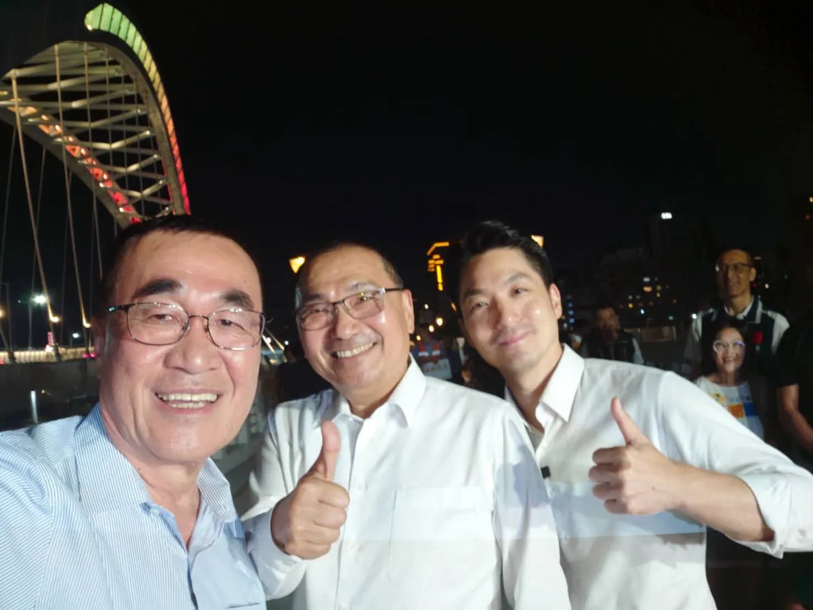
@hammer__lee:今晚，我與侯友宜市長、蔣萬安市長，一起走上川端橋。 這座橋跨越新店溪，連接雙北的風景。 雙北連線，我們一起拚！
Posts

@hammer__lee:今晚，我與侯友宜市長、蔣萬安市長，一起走上川端橋。 這座橋跨越新店溪，連接雙北的風景。 雙北連線，我們一起拚！

@schuanglawyer:最近，我頻繁收到A7居民的反映。大家選擇在這裡落腳，代表對這片新興社區充滿期待。但隨著人口快速成長，各種生活痛點也隨之浮現。 從公園綠地是否充足、公車班次及站點的配置，到孩子的就學需求、污水接管、交通瓶頸，甚至是各項公共設施的建設進度，都是大家最迫切在意的問題。 面對A7重劃區人口急遽增加，市民想知道：市府究竟準備好了嗎？ 這陣子以來，世杰和陳雅倫議員 @yalunchenyalunchen 、李宗豪議員 @tyleehao ，持續針對市民在意的問題，深入討論未來的解方。 昨天我出席樂善里、文樂里和文桃里的中秋活動時，也向大家報告，面對A7重劃區的發展，世杰打算怎麼做！ 世杰深信，市府必須真正看見A7重劃區的急迫需求，加快腳步、提前規劃、積極協調，把民生問題一一解決，讓公共建設跟發展速度一起到位！讓A7動起來，我們一起努力💖


非常感謝數百位 #澎湖鄉親、#機車業好朋友 站出來，一連為我成立兩個後援會。 新北和澎湖都有豐厚的自然資源與海洋文化，未來我不但會透過 #新皇冠海岸計畫，擦亮新北145公里海岸線品牌，更要和未來的 @wu_shuchin #吳淑瑾 澎湖縣長，推動更多跨域合作！ 🌊舉辦「海洋文化節」、雙城聯名遊程，讓新北、澎湖觀光共好！ 🌊擴大舉辦「澎湖農漁特產展售會」，引進澎湖好滋味，穩定產銷通路。 🌊推動「新北澎湖遊學團」，傳承在地特色與文化。 🌊深化技職教育、促進技術交流，加速漁業智慧轉型。 針對機車產業發展，我也向大家報告未來努力的方向： 🛵提高「乙級技術士證照獎金」至6000元，補助車行降噪、排風、防汙設備，實現車行、社區共榮共好。 🛵強化道路安全、支持「合法改裝、客觀驗車」，民眾騎車更安心、更便利。 🛵舉辦「新北機車展」，結合商圈創造規模經濟。 倒數68天，做伙打拚、做伙好！新北就要迎接新時代✨

讓「臺中升級、幸福加給」💪 「#20分鐘生活圈」把最寶貴的時間還給市民！ 感謝太平鄉親搖扇吶喊的熱情，這是啟臣為大家拚搏最大的動力！未來，我將導入AI科技治理，規劃臺中「五大生活圈」，落實「20分鐘生活圈」願景，讓大家在20分鐘內滿足生活所需，「把省下來的通勤時間，還給自己、留給家人」！ 首要任務是重整大眾運輸，做到「跨域快、圈內密、轉乘方便」，串聯六大轉運樞紐，大幅提升交通效率。 啟臣更要推動產業智慧升級，對接半導體、機器人製造、無人載具等新興供應鏈；導入科技智慧農業，再造臺中「領鮮」品牌，創造青年留鄉、返鄉的發展機會；同時擴大托育、托老政策，減輕年輕家庭負擔，讓不同世代都能在臺中幸福安居。 感謝 #賴義鍠議員、 #黃佳恬議員 與里長們的全力相挺！懇請鄉親集中選票支持啟臣，讓我能在市府與議員、里長們並肩作戰，讓臺中啟程、打造旗艦城。 #臺中啟程 #打造旗艦城
學客語也可以這麼有趣！一起「玩中學、學中玩」 我和 鄭麗君 副院長、#古秀妃 主委一起來到 #大FUN凱道，走進客委會主辦的「客庄市場」，與孩子們一起學客語、認識客家食材。透過生活中吃的文化開始學習，讓孩子發現原來認識客家文化可以這麼好玩！ 我們也到各攤位和大家一起逛二手市集、玩泡泡、體驗地板滾球，現場還有環境永續、兒本交通等豐富的親子活動，讓孩子從遊戲中認識不同議題。 我一直認為，文化傳承最好的方式，就是讓孩子從生活中自然接觸、願意開口，慢慢認識自己的語言與文化，才能一代一代傳承下去。 所以未來在新北，我會持續推廣客語教育、挹注更多資源支持客家文史團體及社團，更要打造「新北AI客語學習平台」，讓客語更貼近生活，讓更多孩子願意學、喜歡說，希望每一位客家子女都能多認識自己的文化、以自己的文化為榮。


陳慈慧 慈續服務 最貼心從孩子的通學安全到市民的健康，把每一件生活小事放在心上。讓專業、認真的人進入市議會，一起讓台北變得更好。11月28日，支持陳慈慧，也支持沈伯洋！
今天再一次回到高雄，跟 柯志恩 委員、蔣萬安市長站在同一個台上。 說實在，我的感動、我的感慨，可能比大家都還多。 我希望，讓做事的人改變城市，也改變選舉文化。 高雄對我來說並不陌生。那一段時間，我在這裡當副市長，跟大家一起打拚。每一條路、每一項工程，我到現在都還記得。 那時候我們做的，就是「路平、燈亮、水溝通」。很多人說，那是里長的事。 說實在，市民需要的事，沒有一件是小事。 因為路不平，騎車出去馬上有感覺。燈不亮，晚上回家就不安心。水溝不通，一下雨就積淹水。 最近志恩很關心後勁溪。說到後勁溪，我特別有感覺。 以前後勁溪下游溪寬變窄。後來跟台塑協調用地，讓河道重新整治。這次下大雨，雖然還是有一點危險，但沒溢出。 路平燈亮水溝通，是基礎；「夢想海港、世界雄心」，是願景。 高雄現在面對的是世界的競爭。志恩有國際觀，也有教育專業，她知道下一代需要什麼。所以我要拜託高雄鄉親，給柯志恩一個機會，好好建設高雄！ 最後講到今年的選舉，說實在，我有很多感慨。 選舉不是抹黑。有人在抹黑，我們應該共同來譴責。 所以能改變這個狀況的，只有鄉親手上的那一票。 11 月 28 日，請大家支持我接棒新北市長，支持萬安市長連任，支持柯志恩當選高雄市長。 這一票，投給做事的人，也投給一個不一樣的選舉。


讓街道更好走，讓散步成為中壢的日常 一座城市的進步，不只有捷運、道路這些大型建設，也包括每天出門走路時，一些很實際的感受。 過去的中壢復興路，更多是提供車輛通行；現在，我們把更多空間留給行人、自行車，也增加綠樹和休憩空間； 除了拓寬人行空間，也拆除占用道路的違建及電箱等設施，讓人行動線更完整。此外，也新設實體車阻，增加行走時的安全防護；同時整理架空纜線等雜亂設施，讓街道的視覺更乾淨、更舒服。 從人行空間、路口設計，到街道景觀，我們把一項一項的細節做好，讓復興路成為一條可以慢慢散步的街道。 當然，一條復興路改造完成，還遠遠不夠。 目前，中壢中正公園周邊的改造還進行，預計明年3月完工，完工後將能串聯中壢火車站、中壢圖書館、仁海宮等節點，讓中壢市區的生活空間更完整、更便利。 不只是中壢，我們也已經啟動龍潭舊城、富岡老街的人本環境改善計畫，逐步補足舊市區較缺乏的行人空間與公共環境，把市民每天要走的街道建設好，讓人願意走、願意停留，也讓沿街商業有更好的發展空間。

回到從政起點，再為豐原、后里拚一次！💪 回到翁子里，心裡特別有感。十多年前，我人生第一場選戰的競選總部就在會場對面，這裡正是啟臣從政的起點。我親自為深耕地方26年的老戰友連佳振 最佳選擇 振心服務授戰旗，攜手為地方建設繼續打拚！ 從國四豐潭段、東豐快速道路，到 #活化舊縣府周邊、打造 #中興健康園區 及 #青年創新創業基地，我們要讓建設接力、地方升級，讓長輩獲得更好的照顧，也讓年輕人留在家鄉發展。 11月28日，懇請鄉親支持啟臣、肯定佳振，讓啟臣進市府、佳振進議會，府會同心，一起帶動豐原、后里與山城大步向前！ #臺中啟程 #打造旗艦城 #臺中升級 #翁子里 #地方建設
「這戰一定要贏！」我最敬重的 @hou.yuih 侯友宜主委，為我喊出這一句，我有信心，一定贏。 今天，是李四川競選總部啟用的日子，我也正式宣布，侯友宜市長擔任競選總部主任委員，不管過去、現在和未來，我們始終並肩作戰，身分不同，兄弟情相同。 選戰倒數70天，侯市長擔任我的競總主委，讓我更有信心拚贏這場選戰，十幾年來我們都在彼此身旁，這次，他是我的後盾，是我的底氣。 侯市長八年執政，帶領新北市快速發展向前，我一定會在他奠基的所有基礎之上，全力以赴，穩穩接下他的這一棒，讓新北越來越棒。 「過去有四川、現在侯友宜，未來要回到李四川」，侯友宜主委這一句話，替我做了見證，看到我過往在新北的成績，包括軌道建設、都更進展，我們都一起在為新北努力。 那些我做過的，都刻在新北這片土地上。 謝謝侯友宜主委，您挺到底，我拚到底。
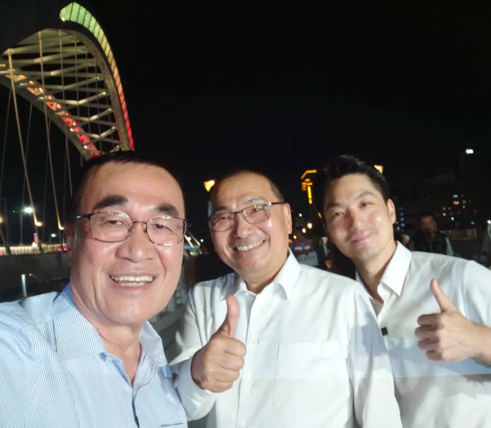
今晚，我與 @hou.yuih 侯友宜市長、 @wanan.chiang 蔣萬安市長，一起走上川端橋。 這座橋跨越新店溪，連接雙北的風景。 雙北連線，我們一起拚！

最近，我頻繁收到A7居民的反映。大家選擇在這裡落腳，代表對這片新興社區充滿期待。但隨著人口快速成長，各種生活痛點也隨之浮現。 從公園綠地是否充足、公車班次及站點的配置，到孩子的就學需求、污水接管、交通瓶頸，甚至是各項公共設施的建設進度，都是大家最迫切在意的問題。 面對A7重劃區人口急遽增加，市民想知道：市府究竟準備好了嗎？ 這陣子以來，世杰和陳雅倫議員 @yalunchenyalunchen 、李宗豪議員 @tyleehao ，持續針對市民在意的問題，深入討論未來的解方。 昨天我出席樂善里、文樂里和文桃里的中秋活動時，也向大家報告，面對A7重劃區的發展，世杰未來打算這樣做： 🌳加速公園建設 推動滯洪池活化 公園加速公20、樂善、長樂等公園建設，並盤點公滯三、公滯七等滯洪空間，推動適合基地濕轉乾活化 🏃補足社區、運動及社福設施 加速推動公20複合場館，整合幼兒園、公托、日照及市民活動中心，並持續推動文青市民活動中心及運動設施，補足新興生活圈公共服務缺口 🚰解決產專區住宅污水接管問題 主動整合中央、開發及管理單位，釐清管線建置與接管責任，盤點污水處理量能，提出改善方案與明確期程 🚌改善公車班次站點 完善捷運接駁 針對產專區、大型住宅社區等人口集中區域增設站點、調整路線，完善住宅社區、A7捷運站、A8長庚及周邊大眾運輸 🚗打通長慶一街 改善交通瓶頸 推動長慶一街銜接長庚路瓶頸路段，完成用地取得及道路設計，串聯周邊地區路網 🏫加速大崗高中設校 ➊ 掌握A7及坪頂地區未來5至10年學齡人口發展趨勢，依人口成長及住宅開發情形，預先規劃及調整教育量能 ➋ 推進文欣國小、大崗國中校舍增建，持續檢視文青國中小及周邊學校容量 ➌ 加速大崗高中設校規劃的推動期程，健全A7、A8及坪頂地區缺乏的教育缺口 世杰深信，市府必須真正看見A7重劃區的急迫需求，加快腳步、提前規劃、積極協調，把民生問題一一解決，讓公共建設跟發展速度一起到位！讓A7動起來，我們一起努力💖

客庄有青年，客家就有未來 四年前，我曾在美濃天后宮辦過廟口開講。那晚廟埕來了好多鄉親，給予我滿滿的熱情與支持，我一直都感恩在心。 說到美濃，大家熟悉粄條、紙傘、藍染和田園風光。對生活在這裡的鄉親來說，客庄更是每天的生活：年輕人回鄉找得到機會，農產和工藝賣得出去，旅客願意留下來，孩子在家裡、學校和街坊都能自然說客語。這些事，我會放進市政裡，認真來做。 1️⃣ 高雄接棒，讓世界看見客家 我會向中央爭取續辦「世界客家博覽會」，並由高雄承辦。以美濃、杉林、六龜等客庄為舞台，串聯海外客家社群，定期舉辦國際論壇、青年交流與藝文合作，把高雄客庄介紹給世界，也一步步把高雄打造成南方客家文化首都。 2️⃣ 客青返鄉，資金、品牌、通路一起到位 推動「高雄客庄復興計畫」，18至40歲青年投入文化、農業、工藝、觀光或地方創生，符合資格並通過審查者，市府每年最高補助50萬元，也協助申請中央資源，兩年合計最高可達200萬元。 市府也會建置客家文化新創集資平台，推動「高雄客庄品牌」與「客家之光」評選，把農產、美食、工藝和文創商品送上共同電商平台。鄉親專心把產品做好，品牌、行銷和通路，市府一起來幫忙。 3️⃣ 從旗美出發，把人潮帶進東九區 以美濃、旗山為旅遊雙核心，改善公共運輸和轉乘，串起內門、杉林、六龜、甲仙等山城景點。旅客從旗美出發，沿著山城慢慢走，半日遊也能變成兩天一夜。 再推出「高雄好客券」：入住客庄地區的合法旅宿或露營場，消費滿1,500元，就能領取500元好客券，到在地特約店家使用。人留下來，住宿、餐飲、農產和商店就有更多生意。 4️⃣ 客家活動我來挺，客庄故事留得住 為鼓勵舉辦客家活動，市府對區公所、各級學校與客家團體文化活動補助，也要實在加碼。同一申請單位每年補助上限由10萬元提高到20萬元；政策性計畫或具文化傳承意義的大型活動，由30萬元提高到60萬元，讓長年在地方保存文化的人得到更多支持。同時，也支持以高雄客庄為主題的音樂、影視及文化創作，讓客庄的美、文化及歷史記憶被世界看見，也希望藉此吸引更多旅客到訪，帶動地方觀光與經濟發展。 現有「高雄客家月」將擴大整合，升級為「高雄客家季」。客家流行音樂祭、市集、工藝展、影像展演與歲時祭典接力登場，客庄與都會區一起熱鬧，做成市民會期待、外地旅客也願意專程參加的高雄盛典。 同時建立「高雄客庄數位典藏」，逐步收錄庄頭歷史、耆老口述、老照片、工藝技法與文化故事，提供學校教學、館舍展示和旅遊導覽使用，把珍貴的地方記憶好好保存下來。 5️⃣ 客家語言不流失，傳統工藝有傳承 2030年前，生活客語和沉浸式教學的參與學校數要倍增，並以三民、鳳山等都會區為目標持續擴大辦理。客語認證獎勵也提高為初級1,000元、中級1,500元、中高級3,000元、高級5,000元、專業級6,000元，鼓勵更多孩子和年輕人開口說客語。 伙房、老街、伯公、敬字亭和歷史聚落，要好好保存；油紙傘、藍染、竹編等工藝，也要建立傳承和培育機制。家裡有人說、學校有人教、手藝有人接，客家文化才會一代一代留在生活裡。 我期待四年後再走進美濃，看到返鄉青年開了店、庄頭產品接到更多訂單，孩子用客語和長輩聊天，外地旅客住了一晚還捨不得走。 上週，再度前往美濃天后宮廟口開講，看到鄉親對美濃的期待、對客庄的建議。這些年來，來自客家鄉親的鼓勵，我一直記得，恁仔細！ #高雄客家 #客庄有青年客家有未來 #這柯不一樣


海線要發展，交通建設是關鍵！ 未來我會加速推動： ✅捷運路網 ✅甲埔大道延伸至大安，銜接國道3號與台61線西濱快 ✅國道4號延伸台中港 ✅生活圈4號道路闢建 盧市府不做的交通建設，就交給何欣純來做！
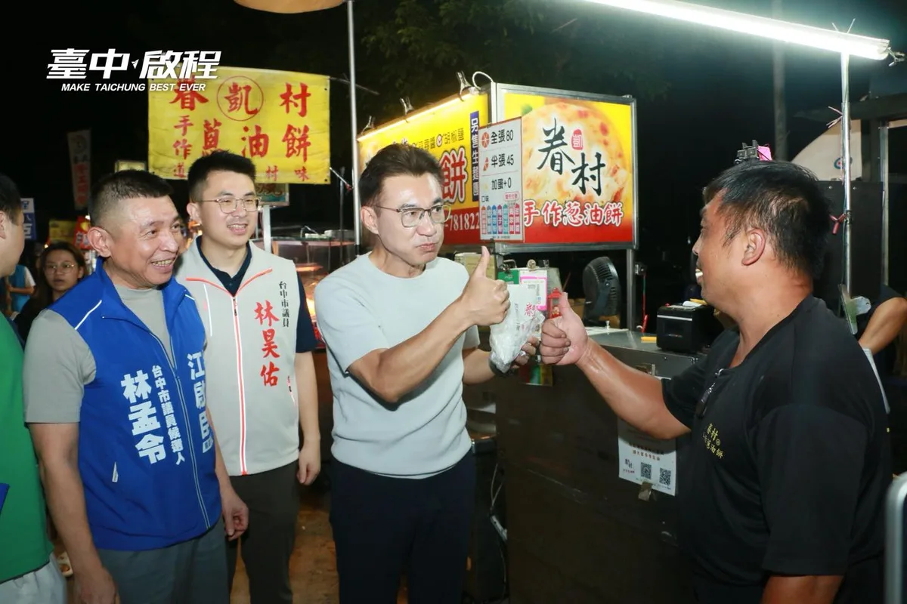
大肚、龍井鄉親的熱情，融化了我的心！🌕 跑完大肚的中秋晚會，我拎著「啟臣提袋」去逛自強夜市。一路上好多朋友拉著我開心合照，緊握著我的手喊「一定挺你當市長！」逛著逛著，竟然還遇到我「#海龍蛙兵」的學弟，特地塞給我一份自家煎的熱騰騰蔥油餅幫我打氣。這份兄弟情跟鄉親們的力挺，我都記在心底了💪 大家對海線發展的期待，啟臣都有聽到。未來我當市長，#海線交通 絕對是第一優先！不管是推動「#生活圈四號」串聯龍井烏日、加速華南路拓寬，還是10月底快通車的「#大肚和美大橋」周邊道路，我一定會全力打通海線的交通任督二脈，讓大家出入更方便！ 謝謝大肚、龍井的好朋友們！未來啟臣會與繼續跟在地議員、里長作伙打拚，帶動海線大發展！也提早祝大家中秋快樂、平安健康！✨ #臺中啟程 #打造旗艦城 #臺中味 #TaichungWay

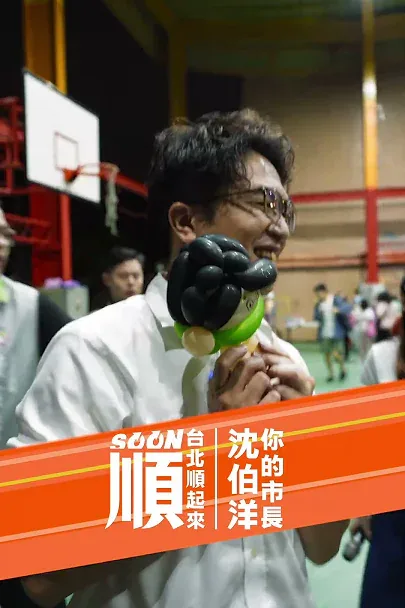
Councilor Chen Tzu-hui cares deeply about everything from children's commuting safety to citizens...
@hammer__lee:新北樹林鎮前街今天清晨傳來讓人悲痛的消息，一位清潔隊的姊妹在掃街時被酒駕騎士撞上，送醫後離世。我向家屬致上最深的哀悼。 酒駕，我嚴厲譴責。 說實在，清潔隊的兄弟姊妹一直都很辛苦。不管日曬雨淋，城市還沒醒，他們就已經在路上，把新北每個角落顧得乾乾淨淨。 最早出門的人，也該平安回家。 這件事不分黨派，大家都該一起想辦法。除了遏止酒駕，更要讓他們在路上作業時少一點風險。 像窄巷的垃圾清運，可以研擬定點收運，讓隊員少在車流裡穿梭。 這一點，我會跟清潔隊的兄弟姊妹站在一起。他們把新北顧得乾乾淨淨，我們也要把他們顧得平平安安。


讓街道更好走，讓散步成為中壢的日常 一座城市的進步，不只有捷運、道路這些大型建設，也包括每天出門走路時，一些很實際的感受。 過去的中壢復興路，更多是提供車輛通行；現在，我們把更多空間留給行人、自行車，也增加綠樹和休憩空間； 除了拓寬人行空間，也拆除占用道路的違建及電箱等設施，讓人行動線更完整。此外，也新設實體車阻，增加行走時的安全防護；同時整理架空纜線等雜亂設施，讓街道的視覺更乾淨、更舒服。 從人行空間、路口設計，到街道景觀，我們把一項一項的細節做好，讓復興路成為一條可以慢慢散步的街道。 當然，一條復興路改造完成，還遠遠不夠。 目前，中壢中正公園周邊的改造還進行，預計明年3月完工，完工後將能串聯中壢火車站、中壢圖書館、仁海宮等節點，讓中壢市區的生活空間更完整、更便利。 不只是中壢，我們也已經啟動龍潭舊城、富岡老街的人本環境改善計畫，逐步補足舊市區較缺乏的行人空間與公共環境，把市民每天要走的街道建設好，讓人願意走、願意停留，也讓沿街商業有更好的發展空間。
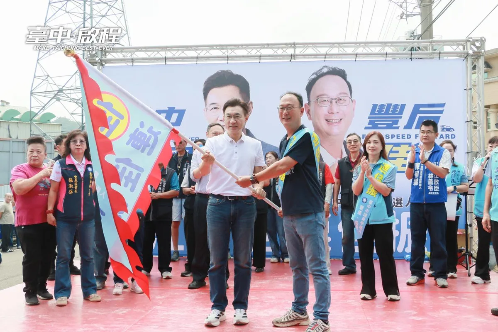
回到從政起點，再為豐原、后里拚一次！💪 回到翁子里，心裡特別有感。十多年前，我人生第一場選戰的競選總部就在會場對面，這裡正是啟臣從政的起點。我親自為深耕地方26年的老戰友連佳振 最佳選擇 振心服務授戰旗，攜手為地方建設繼續打拚！ 從國四豐潭段、東豐快速道路，到 #活化舊縣府周邊、打造 #中興健康園區 及 #青年創新創業基地，我們要讓建設接力、地方升級，讓長輩獲得更好的照顧，也讓年輕人留在家鄉發展。 11月28日，懇請鄉親支持啟臣、肯定佳振，讓啟臣進市府、佳振進議會，府會同心，一起帶動豐原、后里與山城大步向前！ #臺中啟程 #打造旗艦城 #臺中升級 #翁子里 #地方建設

士林北投，有山水、有溫泉，有傳統市場，也有正要發展的北士科。這裡有台北的歷史，也有台北的未來。 ⠀ 士林北投林世宗議員在士林北投服務快20年，謝謝他一路以來的幫助，從磺港溪、北投市場，到環境、社子島、北士科，長期站在地方第一線，最清楚居民真正需要的是什麼。在世宗議員北投後援會成立大會上，也看見許多鄉親一路相挺的力量，成為世宗議員繼續為地方打拚的最大動力。 ⠀ 未來北士科的科技紅利，我希望能真正回到地方，讓交通、住宅、生活機能一起跟上，也讓商圈、市場一起受惠。 ⠀ 我提出城市未來的新方向，世宗議員有深厚的地方經驗。把市政府與市議會的力量接起來，一起讓士林北投更好，讓台北順起來！ ⠀ #台北順起來 #你的市長沈伯洋
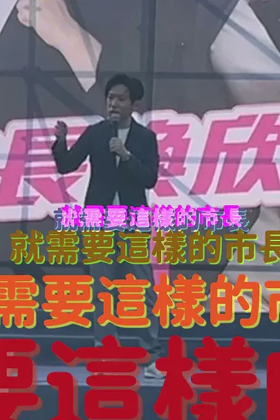
張惇涵力挺何欣純｜海線建設不能再等！🌊

@su.chiaohui:新北和澎湖都有豐厚的自然資源與海洋文化，未來我不但會透過「新皇冠海岸計畫」，擦亮新北145公里海岸線品牌，更要和未來的 @wu_shuchin 吳淑瑾縣長，推動在觀光、產業、教育與文化等更多跨域合作！ 針對機車產業發展，我也向大家報告未來努力的方向，不但要實現車行、社區共榮共好，也要改善道路安全，讓民眾騎車更安心、更便利。 倒數68天，做伙打拚、做伙好！新北就要迎接新時代✨
【何欣純海線競總成立】捷運橘線 海線鐵路雙軌高架化 台中機場擴建一次講清楚
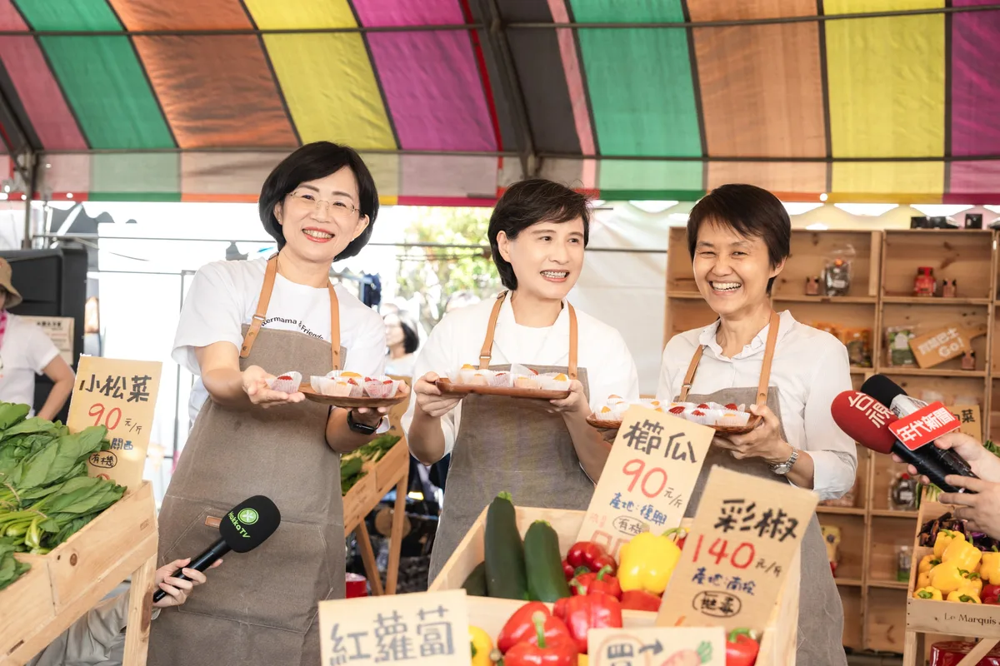
@su.chiaohui:學客語也可以這麼有趣！一起「玩中學、學中玩」 我和鄭麗君副院長、古秀妃主委一起來到「大FUN凱道」，走進客委會主辦的「客庄市場」，與孩子們一起學客語、認識客家食材。透過生活中吃的文化開始學習，讓孩子發現原來認識客家文化可以這麼好玩！ 我們也到各攤位和大家一起逛二手市集、玩泡泡、體驗地板滾球，現場還有環境永續、兒本交通等豐富的親子活動，讓孩子從遊戲中認識不同議題。
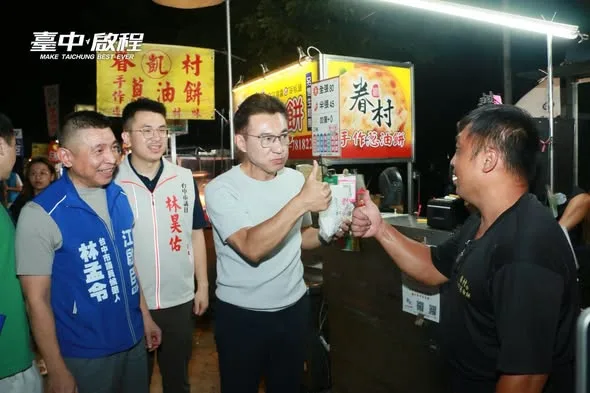
大肚、龍井鄉親的熱情，融化了我的心！🌕 跑完大肚的中秋晚會，我拎著「啟臣提袋」去逛自強夜市。一路上好多朋友拉著我開心合照，緊握著我的手喊「一定挺你當市長！」逛著逛著，竟然還遇到我「#海龍蛙兵」的學弟，特地塞給我一份自家煎的熱騰騰蔥油餅幫我打氣。這份兄弟情跟鄉親們的力挺，我都記在心底了💪 大家對海線發展的期待，啟臣都有聽到。未來我當市長，#海線交通 絕對是第一優先！不管是推動「#生活圈四號」串聯龍井烏日、加速華南路拓寬，還是10月底快通車的「#大肚和美大橋」周邊道路，我一定會全力打通海線的交通任督二脈，讓大家出入更方便！ 謝謝大肚、龍井的好朋友們！未來啟臣會與繼續跟在地議員、里長作伙打拚，帶動海線大發展！也提早祝大家中秋快樂、平安健康！✨ #臺中啟程 #打造旗艦城 #臺中味 #TaichungWay


@zenolai:英雄路、愛河灣大爆滿！ 大家的熱情讓我們寸步難行，但台北高雄一定繼續向前行！ 洋流到港，隆捲風來襲！今天和 @pumashen 沈伯洋從英雄路走向港灣，沿途握不完的手、接連不斷的加油聲，讓我們前進的每一步，都感受到高雄最真摯熱烈的支持！ 今天我們在此走過的每一步都不容易。從謝長廷市長整治愛河、陳其邁代理市長拆除港邊高牆、陳菊市長啟動亞洲新灣區建設，到我有幸在2013年擔任海洋局長時策劃 #黃色小鴨，再到 @chenchimai 陳其邁市長推動輕軌成圓、完善交通，透過熱門IP吸引人潮、帶動招商與灣區經濟。歷任市長、市府團隊與中央攜手投入，一棒接一棒，才有今天的港灣風景，我很珍惜能參與其中。 承接前人的努力，更要為下一代開路。今天握緊的手、喊出的加油，我和沈伯洋都會記在心裡，帶著大家對台北、高雄的盼望，我會接好這一棒，繼續為高雄打拚！也拜託大家陪我們走到最後，把今天的熱情化為行動，今年 11/28 邀請家人、朋友一起出門投下關鍵一票。 感謝今天每一位站出來相挺的朋友！過去我把黃色小鴨丟進水裡，期待今年11/28以後，我可以驕傲地說：「我是第一個把台北市長丟下水的高雄市長！」
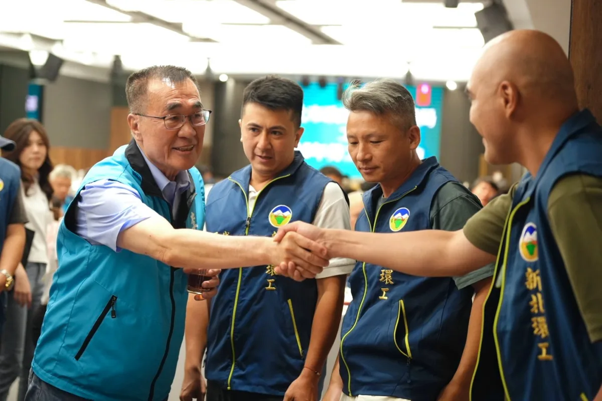
新北樹林鎮前街今天清晨傳來讓人悲痛的消息，一位清潔隊的姊妹在掃街時被酒駕騎士撞上，送醫後離世。我向家屬致上最深的哀悼。 酒駕，我嚴厲譴責。 說實在，清潔隊的兄弟姊妹一直都很辛苦。不管日曬雨淋，城市還沒醒，他們就已經在路上，把新北每個角落顧得乾乾淨淨。 最早出門的人，也該平安回家。 這件事不分黨派，大家都該一起想辦法。除了遏止酒駕，更要讓他們在路上作業時少一點風險。 像窄巷的垃圾清運，可以研擬定點收運，讓隊員少在車流裡穿梭。 這一點，我會跟清潔隊的兄弟姊妹站在一起。他們把新北顧得乾乾淨淨，我們也要把他們顧得平平安安。
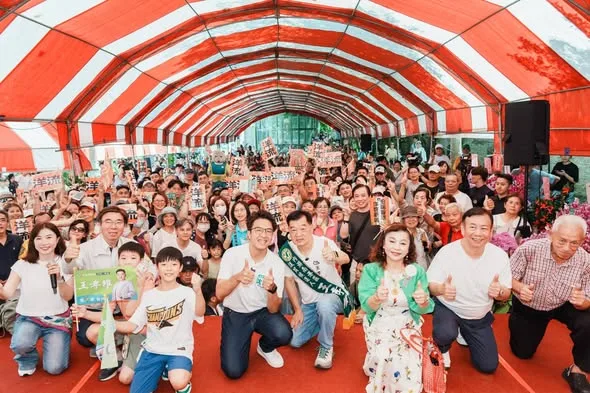
沈伯洋Ｘ王孝維 聯合競選總部成立！ ⠀ 我與 王孝維議員聯合競選總部成立了，來成立大會現場，感受到港湖鄉親滿滿的熱情，也看見溫暖的洋流，正持續匯聚、擴散。 ⠀ 孝維議員深耕港湖多年，熟悉地方、服務扎實，更是一位有遠見的議員。 ⠀ 從營養午餐、防災韌性，到港湖的交通、都更與產業發展，孝維議員總是提早看見問題、提出解方，持續在議會為地方把關。 ⠀ 台北要有新的方向，需要有願景的市長，也需要有遠見的議員。 ⠀ 請大家支持沈伯洋，也讓王孝維高票連任！ 讓我們從港湖出發，把溫暖的洋流帶到台北每一個角落，一起讓台北順起來、向前走！ ⠀ #聯合競選總部成立 #你的市長沈伯洋 #讓台北順起來
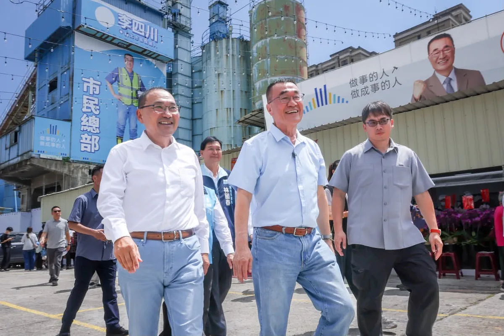
@hammer__lee:「這戰一定要贏！」我最敬重的侯友宜主委，為我喊出這一句，我有信心，一定贏。 今天，是李四川競選總部啟用的日子，我也正式宣布，侯友宜市長擔任競選總部主任委員，不管過去、現在和未來，我們始終並肩作戰，身分不同，兄弟情相同。 選戰倒數70天，侯市長擔任我的競總主委，讓我更有信心拚贏這場選戰，十幾年來我們都在彼此身旁，這次，他是我的後盾，是我的底氣。 侯市長八年執政，帶領新北市快速發展向前，我一定會在他奠基的所有基礎之上，全力以赴，穩穩接下他的這一棒，讓新北越來越棒。 「過去有四川、現在侯友宜，未來要回到李四川」，侯友宜主委這一句話，替我做了見證，看到我過往在新北的成績，包括軌道建設、都更進展，我們都一起在為新北努力。 那些我做過的，都刻在新北這片土地上。 謝謝侯友宜主委，您挺到底，我拚到底。
聯合競總從永和出發！感謝 #許昭興 議員今天成立和我的永和聯合競選總部，我也向大家報告，未來我們會成立 #都市更新局 打造 #簡政便民 都審程序，加速都更，同時盤點學校、公園地下空間，#增設停車場，也要 #完善公車路網，持續改善地方的交通環境。 許多人來到北台灣打拚，第一個選擇落腳的地方就是永和，也因此這裡匯聚了不同時代、不同族群人們的文化，多元、共榮，正是永和最美麗的人文風貌。 我們會讓永和更好，讓永和人更喜歡這裡的生活，也讓更多人看見永和的文化底蘊。 接下來巧慧會陸續在新北29區成立聯合競選總部，最後70天，新北隊一起衝，迎接新北新時代！